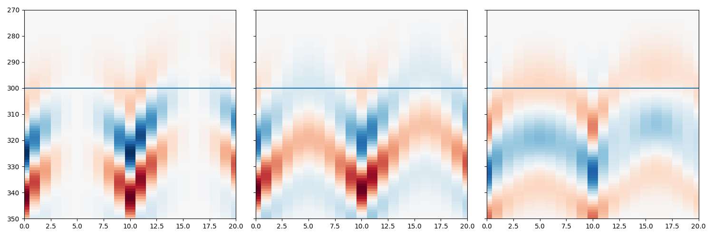
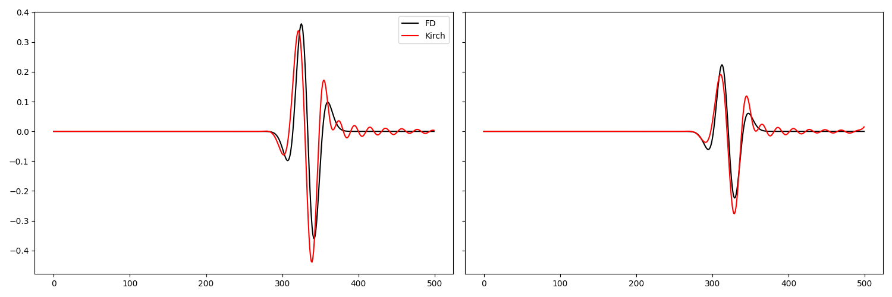
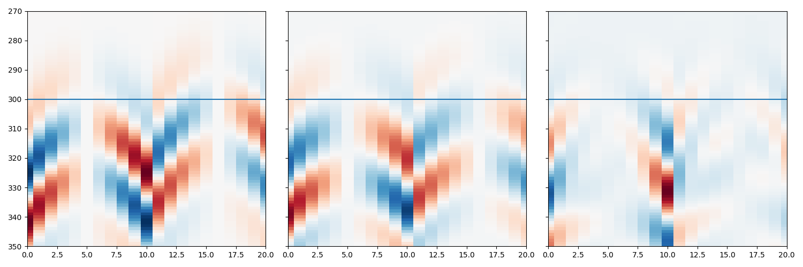
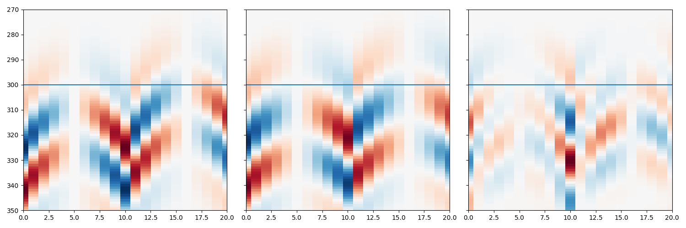
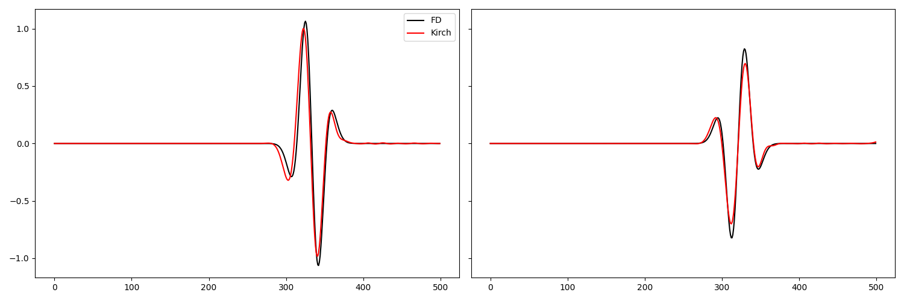

Note
Go to the end to download the full example code.
Waveform-based Moment Tensor Inversion - Multicomponent#
This tutorial illustrates how we can determine the moment tensor of a microseismic source where we do not know the source location. As such, the workflow can act as a joint location and MT solution.
Microseismic data can be considered as: $d=GM Using the Greens functions as defined by Aki and Richards, the above can be expanded out as
where
\(v\) is the velocity measurements (seismic data)
\(M\) is the moment tensor
\(\theta\) describes whether we are utilising the P- or S-wave information
\(i\) describes the component of the data, aligning with the below p,q definitions
\(p\) describes the first index of the moment tensor element
\(q\) describes the second index of the moment tensor element
\(\omega_\theta\) is the peak frequency of the given wave
\(\gamma_i\) is the take-off angle in the ith direction (for a ray between the source and receiver)
\(\alpha\) is the average velocity (currently we assume a homogeneous velocity)
\(r\) is the distance between source and receiver
\(\rho\) is the average density
For more information on the above equation, please refer to [LINK TO MTAI DOCUMENTATION].
In comparison to the Amplitude-Based Moment Tensor Inversion, in this waveform-based approach we do not pick the amplitudes of the p-wave and therefore, do not need knowledge of the source location. Instead, we solve for the MT kernels, e.g., \(M_{xx}\) , \(M_{xy}\) , \(M_{xz}\), etc., across a subsurface area of interest. The resulting product, as you will see, is six MT kernel images.
- The workflow consists of:
reading and pre-processing the seismic data
setting up the problem (subsurface models)
Obtain traveltimes & ray angles
Computing Greens functions for the subsurface area of interest
Make the combined Kirchhoff-MT operator
Jointly solve for the location and MT with a least squares solver
_[Bonus]_ Jointly solve for the location and MT with a FISTA solver
Assumptions: for now, the MTWI procedure assumes a homogeneous velocity model.
Keywords: Greens functions – Kirchhoff
import numpy as np
import os
import matplotlib.pyplot as plt
from pylops.utils import dottest
from pylops.utils.wavelets import *
from pyfrac.utils.sofiutils import read_seis
from pyfrac.modelling.kirchhoff import Kirchhoff
from pyfrac.modelling.trueamp_kirchhoff import Kirchhoff as TAKirchhoff
from pyfrac.locationsolvers.localisationutils import get_max_locs
from pyfrac.mtsolvers.mtwi import *
from pyfrac.mtsolvers.homo_mti import collect_source_angles, multicomp_Greens_Pwave
from pyfrac.mtsolvers.mtutils import get_mt_computation_dict, get_mt_at_loc, expected_sloc_from_mtwi
from pyfrac.visualisation.eventimages import locimage3d
Load seismic data#
For this example, we will use a toy example of a small homogenous model with a gridded surface receiver array. The data are modelled using the SOFI3D Finite Difference package.
data_dir = '../data/pyfrac_SOFIModelling'
# Load receiver geometry
recs_xzy = np.loadtxt(os.path.join(data_dir,'inputs/griddedarray_xzy_20m.dat')).T
nr = recs_xzy.shape[1]
print(nr)
# Load seismic data
expname = 'MT-90-90-180_Homogeneous_griddedarray'
# Vz is Vy cause SOFI ¯\_(ツ)_/¯
vx = read_seis(os.path.join(data_dir, 'outputs/su/%s_vx.txt'%expname),
nr=nr)
vy = read_seis(os.path.join(data_dir, 'outputs/su/%s_vz.txt'%expname),
nr=nr)
vz = read_seis(os.path.join(data_dir, 'outputs/su/%s_vy.txt'%expname),
nr=nr)
sdt = 1e-3 # SOFI3D Time sampling rate
t_shift = 167 # Time shift required to align FD data to zero for Kirchhoff operators
tdur = 500 # Recording duration
efd_scaler = np.max(abs(vz)) # Scaler to make data more friendly
vx = vx[:, t_shift:t_shift+tdur]*efd_scaler
vy = vy[:, t_shift:t_shift+tdur]*efd_scaler
vz = vz[:, t_shift:t_shift+tdur]*efd_scaler
# Combine into a single array
FD_data = np.array([vx, vy, vz])
# Let's just double-check the data is loaded well. Observe the changes in polarity across the
# traces, this is the information that we utilise to determine the Moment Tensor.
fig,axs = plt.subplots(1,3,figsize=[15,5])
axs[0].imshow(vx.T, aspect='auto',cmap='binary_r')
axs[1].imshow(vy.T, aspect='auto',cmap='binary_r')
axs[2].imshow(vz.T, aspect='auto',cmap='binary_r')
143
<matplotlib.image.AxesImage object at 0x7fdc7cf36b00>
Set up Problem#
For this simple example, let’s use a small homogeneous velocity model with a surface receiver array in a gridded formation that fully covers the velocity model.
# Load in the velocity model - this is the model used in the FD modelling to generate the data.
# At the moment it has boundaries that we used for the modelling but we will remove them after
# Loading the model
abs_bounds = 30
dx = dy = dz = 5
nx = 112
ny = 128
nz = 120
mod_w_bounds = np.fromfile(os.path.join(data_dir,'inputs/models/Homogeneous_xyz.vp'),dtype='float32').reshape([nx,ny,nz])
# Remove absorbing boundaries for both the model and receiver coordinates
mod = mod_w_bounds[abs_bounds:-abs_bounds, abs_bounds:-abs_bounds, :-abs_bounds] # z has free surface
nx, ny, nz = mod.shape
x, y, z = np.arange(nx)*dx, np.arange(ny)*dy, np.arange(nz)*dz
recs = np.array([recs_xzy[0]-(abs_bounds*dx), recs_xzy[2]-(abs_bounds*dx), recs_xzy[1]])
Obtain traveltimes & ray angles, Estimate Wavelet#
These are required for the Green’s functions
# TRAVEL TIME TABLE
trav = Kirchhoff._traveltime_table(z,
x,
y=y,
recs=recs,
vel=mod,
mode='eikonal')
TTT_full = trav.reshape(nx,ny,nz,nr).transpose([3,0,1,2])
# AMPLITUDE TERMS
gamma_sourceangles, dist_table = collect_source_angles(x,y,z, reclocs=recs, nc=3)
dt = sdt
nt = vz.shape[1]
t = np.arange(nt)*dt
wav, wavt, wavc = ricker(t[:81], f0=20)
plt.plot(wav)

/home/runner/work/PyFrac/PyFrac/pyfrac/mtsolvers/homo_mti.py:43: RuntimeWarning: invalid value encountered in divide
gamma_sourceangles[0, irec] = delta_x / total_distance
/home/runner/work/PyFrac/PyFrac/pyfrac/mtsolvers/homo_mti.py:45: RuntimeWarning: invalid value encountered in divide
gamma_sourceangles[1, irec] = delta_y / total_distance
/home/runner/work/PyFrac/PyFrac/pyfrac/mtsolvers/homo_mti.py:47: RuntimeWarning: invalid value encountered in divide
gamma_sourceangles[2, irec] = delta_z / total_distance
[<matplotlib.lines.Line2D object at 0x7fdc7d10e470>]
Computing Greens functions for the subsurface area of interest#
Make cube area of interest as can’t consider the full subsurface body
hwin_nx_aoi, hwin_ny_aoi, hwin_nz_aoi = 15, 13, 11 # half window lengths in x, y, z
winc_x, winc_y, winc_z = nx//2, ny//2, 2*nz//3 # Center points of the area of interest
# Defining area of interest
xsi, xfi = winc_x-hwin_nx_aoi, winc_x+hwin_nx_aoi+1 # start/end index of x-region of interest
ysi, yfi = winc_y-hwin_ny_aoi, winc_y+hwin_ny_aoi+1 # start/end index of y-region of interest
zsi, zfi = winc_z-hwin_nz_aoi, winc_z+hwin_nz_aoi+1 # start/end index of z-region of interest
# Parameters only for the area of interest
gamma_sourceangles_aoi = gamma_sourceangles[:, :, xsi:xfi, ysi:yfi, zsi:zfi]
dist_table_aoi = dist_table[:, xsi:xfi, ysi:yfi, zsi:zfi]
tt_table_aoi = TTT_full[:, xsi:xfi, ysi:yfi, zsi:zfi]
nr, nx_aoi, ny_aoi, nz_aoi = tt_table_aoi.shape
print(nr, nx_aoi, ny_aoi, nz_aoi)
MT_comp_dict = get_mt_computation_dict() # This keeps everything nice and clean in the later G compute
# Computing Greens functions for AoI
Gx, Gy, Gz = multicomp_Greens_Pwave(nxyz=[nx_aoi, ny_aoi, nz_aoi],
nr=nr,
gamma_sourceangles=gamma_sourceangles_aoi,
dist_table=dist_table_aoi,
vel=mod,
MT_comp_dict=MT_comp_dict,
omega_p=1,
)
143 31 27 23
Make the combined Kirchhoff-MT operator#
/home/runner/work/PyFrac/PyFrac/pyfrac/modelling/trueamp_kirchhoff.py:254: FutureWarning: A new implementation of Kirchhoff is provided in v2.1.0. This currently affects only the inner working of the operator, end-users can continue using the operator in the same way. Nevertheless, it is now recommended to providethe variables trav (and amp) as a tuples containing the traveltime (and amplitude) tables for sources and receivers separately. This behaviour will eventually become default in version v3.0.0.
warnings.warn(
Dot test passed, v^H(Opu)=4.305303017704418 - u^H(Op^Hv)=4.3053030177044125
Jointly solve for the location and MT with a least squares solver#
nxyz=[nx_aoi, ny_aoi, nz_aoi]
# ADJOINT
mt_adj = adjoint_mtmodelling(FD_data, Mstack_Op, nxyz)
# LSQR
mt_inv = lsqr_mtsolver(FD_data, Mstack_Op, nxyz)
exp_sloc, _ = expected_sloc_from_mtwi(mt_inv)
print('Expected Source Location (AOI coord. ref.): \n', exp_sloc)
mt_at_loc = get_mt_at_loc(mt_inv, [int(exp_sloc[0]), int(exp_sloc[1]), int(exp_sloc[2])])
print('MT at expected Source Location (full): \n', mt_at_loc)
print('MT at expected Source Location (rounded): \n', np.round(mt_at_loc, decimals=2))
clim = 1e-4
locimage3d(mt_inv[0], int(exp_sloc[0]), int(exp_sloc[1]), int(exp_sloc[2]), clipval=[-clim, clim])
locimage3d(mt_inv[1], int(exp_sloc[0]), int(exp_sloc[1]), int(exp_sloc[2]), clipval=[-clim, clim])
locimage3d(mt_inv[2], int(exp_sloc[0]), int(exp_sloc[1]), int(exp_sloc[2]), clipval=[-clim, clim])
locimage3d(mt_inv[3], int(exp_sloc[0]), int(exp_sloc[1]), int(exp_sloc[2]), clipval=[-clim, clim])
locimage3d(mt_inv[4], int(exp_sloc[0]), int(exp_sloc[1]), int(exp_sloc[2]), clipval=[-clim, clim])
locimage3d(mt_inv[5], int(exp_sloc[0]), int(exp_sloc[1]), int(exp_sloc[2]), clipval=[-clim, clim]);
- 
- 
- 

- 
- 
LSQR Least-squares solution of Ax = b
The matrix A has 214500 rows and 115506 columns
damp = 0.00000000000000e+00 calc_var = 0
atol = 0.00e+00 conlim = 1.00e+08
btol = 0.00e+00 iter_lim = 50
Itn x[0] r1norm r2norm Compatible LS Norm A Cond A
0 0.00000e+00 7.140e-28 7.140e-28 1.0e+00 3.7e+26
1 -1.37864e-30 4.397e-28 4.397e-28 6.2e-01 2.8e-13 3.3e-01 1.0e+00
2 -1.15741e-30 2.932e-28 2.932e-28 4.1e-01 1.3e-13 4.0e-01 2.5e+00
3 2.92576e-31 2.562e-28 2.562e-28 3.6e-01 9.2e-14 4.6e-01 3.8e+00
4 2.20728e-30 2.288e-28 2.288e-28 3.2e-01 1.1e-13 5.1e-01 5.6e+00
5 3.15831e-30 2.110e-28 2.110e-28 3.0e-01 4.7e-14 6.1e-01 7.9e+00
6 2.47969e-30 1.962e-28 1.962e-28 2.7e-01 4.4e-14 6.4e-01 1.0e+01
7 1.36775e-30 1.895e-28 1.895e-28 2.7e-01 5.2e-14 6.8e-01 1.2e+01
8 -6.76337e-32 1.823e-28 1.823e-28 2.6e-01 3.7e-14 7.5e-01 1.5e+01
9 -8.53621e-31 1.792e-28 1.792e-28 2.5e-01 2.4e-14 8.1e-01 1.7e+01
10 -1.36433e-30 1.776e-28 1.776e-28 2.5e-01 2.9e-14 8.5e-01 1.9e+01
40 -2.39856e-29 1.368e-28 1.368e-28 1.9e-01 8.4e-15 1.6e+00 1.8e+02
41 -2.39255e-29 1.364e-28 1.364e-28 1.9e-01 8.4e-15 1.6e+00 1.8e+02
42 -2.38634e-29 1.362e-28 1.362e-28 1.9e-01 9.1e-15 1.6e+00 1.9e+02
43 -2.37151e-29 1.357e-28 1.357e-28 1.9e-01 8.5e-15 1.7e+00 2.0e+02
44 -2.37542e-29 1.348e-28 1.348e-28 1.9e-01 1.0e-14 1.7e+00 2.1e+02
45 -2.38090e-29 1.344e-28 1.344e-28 1.9e-01 1.1e-14 1.7e+00 2.1e+02
46 -2.38780e-29 1.339e-28 1.339e-28 1.9e-01 9.5e-15 1.7e+00 2.2e+02
47 -2.38967e-29 1.332e-28 1.332e-28 1.9e-01 1.1e-14 1.7e+00 2.3e+02
48 -2.39690e-29 1.322e-28 1.322e-28 1.9e-01 8.3e-15 1.8e+00 2.5e+02
49 -2.36994e-29 1.315e-28 1.315e-28 1.8e-01 1.2e-14 1.8e+00 2.6e+02
50 -2.29132e-29 1.304e-28 1.304e-28 1.8e-01 9.2e-15 1.8e+00 2.7e+02
LSQR finished
The iteration limit has been reached
istop = 7 r1norm = 1.3e-28 anorm = 1.8e+00 arnorm = 2.0e-30
itn = 50 r2norm = 1.3e-28 acond = 2.7e+02 xnorm = 1.3e-26
Expected Source Location (AOI coord. ref.):
[10.2 8.8 10.2]
MT at expected Source Location (full):
(8.351416063581317e-29, 1.07621275231776e-28, 1.0307808835221318e-28, 8.808955958841666e-31, -1.3139578397094974e-28, -1.2079575383970682e-28)
MT at expected Source Location (rounded):
[ 0. 0. 0. 0. -0. -0.]
/home/runner/work/PyFrac/PyFrac/pyfrac/visualisation/eventimages.py:11: UserWarning: This figure includes Axes that are not compatible with tight_layout, so results might be incorrect.
fig.tight_layout()
(<Figure size 800x800 with 5 Axes>, (<Axes: xlabel='x samples', ylabel='t samples'>, <Axes: xlabel='y samples'>, <Axes: ylabel='y samples'>))
Total running time of the script: (1 minutes 47.424 seconds)